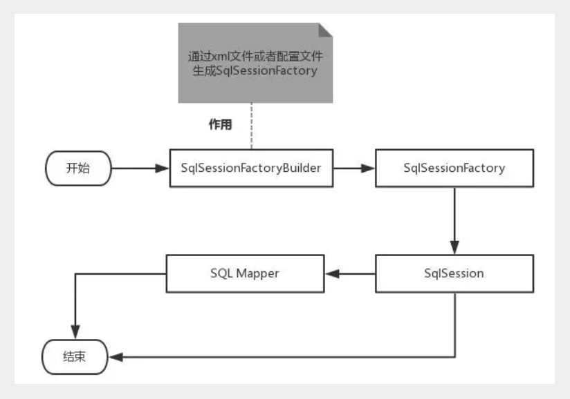
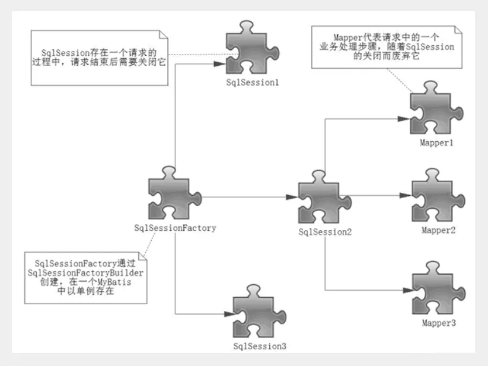

CRUD（增删查改）操作
select
- select标签是mybatis中最常用的标签之一
- select语句又很多属性可以详细配置每一条SQL语句
- SQL语句返回值类型。【完整的类名或者别名】
- 传入SQL语句的参数类型 。【万能的Map，可以多尝试使用】
- 命名空间中唯一的标识符
- 接口中的方法名与映射文件中的SQL语句ID 一一对应
- id
- parameterType
- resultType
例如：根据用户名查询用户
- 在UserMapper中添加对应方法
public interface UserMapper { //查询全部用户 List<User> selectUser(); //根据id查询用户 User selectUserByName(String username); } - 在UserMapper.xml中添加Select语句
<select id="selectUserByName" resultType="com.kuang.pojo.User"> select * from user where username = #{username} </select> - 测试类中测试
使用万能Map@Test public void tsetSelectUserById() { SqlSession session = MybatisUtils.getSession(); //获取SqlSession连接 UserMapper mapper = session.getMapper(UserMapper.class); User user = mapper.selectUserByName("lg"); System.out.println(user); session.close(); } - 在接口方法中，参数直接传递Map；
User selectUserByNP2(Map<String,Object> map); - 编写sql语句的时候，需要传递参数类型，参数类型为map
<select id="selectUserByNP2" parameterType="map" resultType="com.kuang.pojo.User"> select * from user where name = #{username} and pwd = #{pwd} </select> - 在使用方法的时候，Map的 key 为 sql中取的值即可，没有顺序要求！
总结：如果参数过多，我们可以考虑直接使用Map实现，如果参数比较少，直接传递参数即可Map<String, Object> map = new HashMap<String, Object>(); map.put("username","小明"); map.put("pwd","123456"); User user = mapper.selectUserByNP2(map);
insert
例如：给数据库增加一个用户
- 在UserMapper接口中添加对应的方法
//添加一个用户 int addUser(User user); - 在UserMapper.xml中添加insert语句
<insert id="addUser" parameterType="com.kuang.pojo.User"> insert into user (username,password) values (#{username},#{password}) </insert> - 测试
注意点：增、删、改操作需要提交事务！@Test public void testAddUser() { SqlSession session = MybatisUtils.getSession(); UserMapper mapper = session.getMapper(UserMapper.class); User user = new User("王五","zxcvbn"); int i = mapper.addUser(user); System.out.println(i); session.commit(); //提交事务,重点!不写的话不会提交到数据库 session.close(); }
update
例如：修改用户信息
- 编写接口方法
//修改一个用户 int updateUser(User user); - 编写对应的配置文件SQL
<update id="updateUser" parameterType="com.kuang.pojo.User"> update user set password=#{password} where username = #{username} </update> - 测试
@Test public void testUpdateUser() { SqlSession session = MybatisUtils.getSession(); UserMapper mapper = session.getMapper(UserMapper.class); User user = mapper.selectUserById(1); user.setPwd("asdfgh"); int i = mapper.updateUser(user); System.out.println(i); session.commit(); //提交事务,重点!不写的话不会提交到数据库 session.close(); }
delete
例如：根据用户名删除一个用户
- 同理，编写接口方法
//根据id删除用户 int deleteUser(String usernmae); - 编写对应的配置文件SQL
<delete id="deleteUser" parameterType="String"> delete from user where username = #{username} </delete> - 测试
@Test public void testDeleteUser() { SqlSession session = MybatisUtils.getSession(); UserMapper mapper = session.getMapper(UserMapper.class); int i = mapper.deleteUser("lg"); System.out.println(i); session.commit(); //提交事务,重点!不写的话不会提交到数据库 session.close(); }
小结
- 所有的增删改操作都需要提交事务！
- 接口所有的普通参数，尽量都写上@Param参数，尤其是多个参数时，必须写上！
- 有时候根据业务的需求，可以考虑使用map传递参数！
- 为了规范操作，在SQL的配置文件中，我们尽量将Parameter参数和resultType都写上！
模糊查询
第1种：在Java代码中添加sql通配符
string wildcardname = “%smi%”;
list<name> names = mapper.selectlike(wildcardname);
<select id=”selectlike”>
select * from foo where bar like #{value}
</select>
第2种：在sql语句中拼接通配符，会引起sql注入
string wildcardname = “smi”;
list<name> names = mapper.selectlike(wildcardname);
<select id=”selectlike”>
select * from foo where bar like "%"#{value}"%"
</select>
配置解析
核心配置文件
- mybatis-config.xml 系统核心配置文件
- MyBatis 的配置文件包含了会深深影响 MyBatis 行为的设置和属性信息。
- 能配置的内容如下：
configuration（配置） properties（属性） settings（设置） typeAliases（类型别名） typeHandlers（类型处理器） objectFactory（对象工厂） plugins（插件） environments（环境配置） environment（环境变量） transactionManager（事务管理器） dataSource（数据源） databaseIdProvider（数据库厂商标识） mappers（映射器） <!-- 注意元素节点的顺序！顺序不对会报错 -->environments元素
<environments default="development"> <environment id="development"> <transactionManager type="JDBC"> <property name="..." value="..."/> </transactionManager> <dataSource type="POOLED"> <property name="driver" value="${driver}"/> <property name="url" value="${url}"/> <property name="username" value="${username}"/> <property name="password" value="${password}"/> </dataSource> </environment> </environments> - 配置MyBatis的多套运行环境，将SQL映射到多个不同的数据库上，必须指定其中一个为默认运行环境（通过default指定）
- 子元素节点：environment
- dataSource 元素使用标准的 JDBC 数据源接口来配置 JDBC 连接对象的资源。
- 数据源是必须配置的。
- 有三种内建的数据源类型
type="[UNPOOLED|POOLED|JNDI]"） - unpooled：这个数据源的实现只是每次被请求时打开和关闭连接。
- pooled：这种数据源的实现利用“池”的概念将 JDBC 连接对象组织起来 , 这是一种使得并发 Web 应用快速响应请求的流行处理方式。
- jndi：这个数据源的实现是为了能在如 Spring 或应用服务器这类容器中使用，容器可以集中或在外部配置数据源，然后放置一个 JNDI 上下文的引用。
- 数据源也有很多第三方的实现，比如dbcp，c3p0，druid等等….
- 子元素节点：transactionManager - [ 事务管理器 ]
<!-- 语法 --> <transactionManager type="[ JDBC | MANAGED ]"/> - 子元素节点：数据源（dataSource）
mappers元素
mappers
- 映射器 : 定义映射SQL语句文件
- Java 在自动查找这方面没有提供一个很好的方法，所以最佳的方式是告诉 MyBatis 到哪里去找映射文件。你可以使用相对于类路径的资源引用， 或完全限定资源定位符（包括 file:/// 的 URL），或类名和包名等。映射器是MyBatis中最核心的组件之一，在MyBatis 3之前，只支持xml映射器，即：所有的SQL语句都必须在xml文件中配置。而从MyBatis 3开始，还支持接口映射器，这种映射器方式允许以Java代码的方式注解定义SQL语句，非常简洁。
引入资源方式
<!-- 使用相对于类路径的资源引用 -->
<mappers>
<mapper resource="org/mybatis/builder/PostMapper.xml"/>
</mappers>
<!-- 使用完全限定资源定位符（URL） -->
<mappers>
<mapper url="file:///var/mappers/AuthorMapper.xml"/>
</mappers>
<!--
使用映射器接口实现类的完全限定类名
需要配置文件名称和接口名称一致，并且位于同一目录下
-->
<mappers>
<mapper class="org.mybatis.builder.AuthorMapper"/>
</mappers>
<!--
将包内的映射器接口实现全部注册为映射器
但是需要配置文件名称和接口名称一致，并且位于同一目录下
-->
<mappers>
<package name="org.mybatis.builder"/>
</mappers>
Mapper文件
<?xml version="1.0" encoding="UTF-8" ?>
<!DOCTYPE mapper
PUBLIC "-//mybatis.org//DTD Mapper 3.0//EN"
"http://mybatis.org/dtd/mybatis-3-mapper.dtd">
<mapper namespace="com.lg.mapper.UserMapper">
</mapper>
- namespace中文意思：命名空间，作用如下：
- namespace的命名必须跟某个接口同名
- 接口中的方法与映射文件中sql语句id应该一一对应
- namespace和子元素的id联合保证唯一 , 区别不同的mapper
- 绑定DAO接口
- namespace命名规则 : 包名+类名
MyBatis 的真正强大在于它的映射语句，这是它的魔力所在。由于它的异常强大，映射器的 XML 文件就显得相对简单。如果拿它跟具有相同功能的 JDBC 代码进行对比，会立即发现省掉了将近 95% 的代码。MyBatis 为聚焦于 SQL 而构建，以尽可能地为你减少麻烦。
Properties优化
数据库这些属性都是可外部配置且可动态替换的，既可以在典型的 Java 属性文件中配置，亦可通过 properties 元素的子元素来传递。具体的官方文档
我们来优化我们的配置文件
第一步 ; 在资源目录下新建一个db.properties
driver=com.mysql.jdbc.Driver
url=jdbc:mysql://localhost:3306/mybatis?useSSL=true&useUnicode=true&characterEncoding=utf8
username=root
password=123456
第二步 : 将文件导入properties 配置文件
<configuration>
<!--导入properties文件-->
<properties resource="db.properties"/>
<environments default="development">
<environment id="development">
<transactionManager type="JDBC"/>
<dataSource type="POOLED">
<property name="driver" value="${driver}"/>
<property name="url" value="${url}"/>
<property name="username" value="${username}"/>
<property name="password" value="${password}"/>
</dataSource>
</environment>
</environments>
<mappers>
<mapper resource="mapper/UserMapper.xml"/>
</mappers>
</configuration>
更多操作，可以查看官方文档！
- 配置文件优先级问题
- 新特性：使用占位符
typeAliases优化
类型别名是为 Java 类型设置一个短的名字。它只和 XML 配置有关，存在的意义仅在于用来减少类完全限定名的冗余。
<!--配置别名,注意顺序-->
<typeAliases>
<typeAlias type="com.lg.pojo.User" alias="User"/>
</typeAliases>
当这样配置时，User可以用在任何使用com.lg.pojo.User的地方。
也可以指定一个包名，MyBatis 会在包名下面搜索需要的 Java Bean，比如:
<typeAliases>
<package name="com.lg.pojo"/>
</typeAliases>
每一个在包 com.lg.pojo 中的 Java Bean，在没有注解的情况下，会使用 Bean 的首字母小写的非限定类名来作为它的别名。
若有注解，则别名为其注解值。见下面的例子：
@Alias("user")
public class User {
...
}
其他配置浏览
设置
设置（settinjgs）相关 => 查看帮助文档
- 懒加载
- 日志实现
- 缓存开启关闭
一个配置完整的settings元素的示例如下：
<settings> <setting name="cacheEnabled" value="true"/> <setting name="lazyLoadingEnabled" value="true"/> <setting name="multipleResultSetsEnabled" value="true"/> <setting name="useColumnLabel" value="true"/> <setting name="useGeneratedKeys" value="false"/> <setting name="autoMappingBehavior" value="PARTIAL"/> <setting name="autoMappingUnknownColumnBehavior" value="WARNING"/> <setting name="defaultExecutorType" value="SIMPLE"/> <setting name="defaultStatementTimeout" value="25"/> <setting name="defaultFetchSize" value="100"/> <setting name="safeRowBoundsEnabled" value="false"/> <setting name="mapUnderscoreToCamelCase" value="false"/> <setting name="localCacheScope" value="SESSION"/> <setting name="jdbcTypeForNull" value="OTHER"/> <setting name="lazyLoadTriggerMethods" value="equals,clone,hashCode,toString"/> </settings>
类型处理器
- 无论是 MyBatis 在预处理语句（PreparedStatement）中设置一个参数时，还是从结果集中取出一个值时， 都会用类型处理器将获取的值以合适的方式转换成 Java 类型。
- 你可以重写类型处理器或创建你自己的类型处理器来处理不支持的或非标准的类型。【了解即可】
对象工厂
- MyBatis 每次创建结果对象的新实例时，它都会使用一个对象工厂（ObjectFactory）实例来完成。
- 默认的对象工厂需要做的仅仅是实例化目标类，要么通过默认构造方法，要么在参数映射存在的时候通过有参构造方法来实例化。
- 如果想覆盖对象工厂的默认行为，则可以通过创建自己的对象工厂来实现。【了解即可】
生命周期和作用域
作用域（Scope）和生命周期
理解我们目前已经讨论过的不同作用域和生命周期类是至关重要的，因为错误的使用会导致非常严重的并发问题。
画一个流程图，分析一下！

作用域理解
SqlSessionFactoryBuilder 的作用在于创建 SqlSessionFactory，创建成功后，SqlSessionFactoryBuilder 就失去了作用，所以它只能存在于创建 SqlSessionFactory 的方法中，而不要让其长期存在。因此 SqlSessionFactoryBuilder 实例的最佳作用域是方法作用域（也就是局部方法变量）。
SqlSessionFactory 可以被认为是一个数据库连接池，它的作用是创建 SqlSession 接口对象。因为 MyBatis 的本质就是 Java 对数据库的操作，所以 SqlSessionFactory 的生命周期存在于整个 MyBatis 的应用之中，所以一旦创建了 SqlSessionFactory，就要长期保存它，直至不再使用 MyBatis 应用，所以可以认为 SqlSessionFactory 的生命周期就等同于 MyBatis 的应用周期。
由于 SqlSessionFactory 是一个对数据库的连接池，所以它占据着数据库的连接资源。如果创建多个 SqlSessionFactory，那么就存在多个数据库连接池，这样不利于对数据库资源的控制，也会导致数据库连接资源被消耗光，出现系统宕机等情况，所以尽量避免发生这样的情况。
因此在一般的应用中我们往往希望 SqlSessionFactory 作为一个单例，让它在应用中被共享。所以说 SqlSessionFactory 的最佳作用域是应用作用域。
如果说 SqlSessionFactory 相当于数据库连接池，那么 SqlSession 就相当于一个数据库连接（Connection 对象），你可以在一个事务里面执行多条 SQL，然后通过它的 commit、rollback 等方法，提交或者回滚事务。所以它应该存活在一个业务请求中，处理完整个请求后，应该关闭这条连接，让它归还给 SqlSessionFactory，否则数据库资源就很快被耗费精光，系统就会瘫痪，所以用 try…catch…finally… 语句来保证其正确关闭。
所以 SqlSession 的最佳的作用域是请求或方法作用域。

转载请注明来源，欢迎对文章中的引用来源进行考证，欢迎指出任何有错误或不够清晰的表达。可以在下面评论区评论，也可以邮件至 1589631311@qq.com